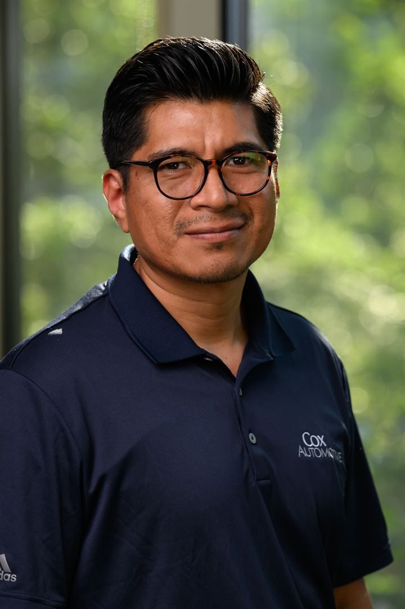

Virtual desktop platforms
Host pools, session hosts, application delivery, scaling, disaster recovery and performance.
Open to new roles
Senior VDI & Cloud Infrastructure Engineer
I design, automate and repair enterprise virtual desktop platforms. Azure Virtual Desktop, Omnissa Horizon and Windows 365 are my daily work, and I am the person called in when production breaks.
Word version (.docx) · LinkedIn

The platforms and practices I own end to end, from image build to production escalation.
Host pools, session hosts, application delivery, scaling, disaster recovery and performance.
Profile containers, Cloud Cache design, storage behavior and profile troubleshooting.
Gold images built through a pipeline, with Office configuration and deployment validation.
Provisioning, monitoring and routine maintenance moved from manual steps to code.
Authentication, certificates and True SSO across Entra ID, Active Directory and Azure networking.
Health dashboards, utilization reporting and operational analytics built on Azure telemetry.
A virtual desktop session passes through five layers. I have hands-on ownership at each one, so I can trace a fault from the user's screen to its source.
Escalation across authentication, profiles, networking, certificates and session hosts is where most of my incident work lands.
Seven years at Cox Automotive engineering and supporting enterprise virtual desktops, after VDI and desktop roles at Waystar, Navicure and Forsyth County Schools.
Cox Automotive, Atlanta, GA
Waystar (the combination of Navicure and ZirMed)
Navicure
Forsyth County Schools, Forsyth, GA
Certifications, newest first. Education: Computer Science and Information Technology, Gainesville State College, 2003 – 2009.
I am looking for a role where I can own VDI and cloud infrastructure engineering. The fastest way to reach me is LinkedIn or email.